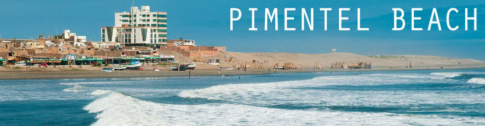
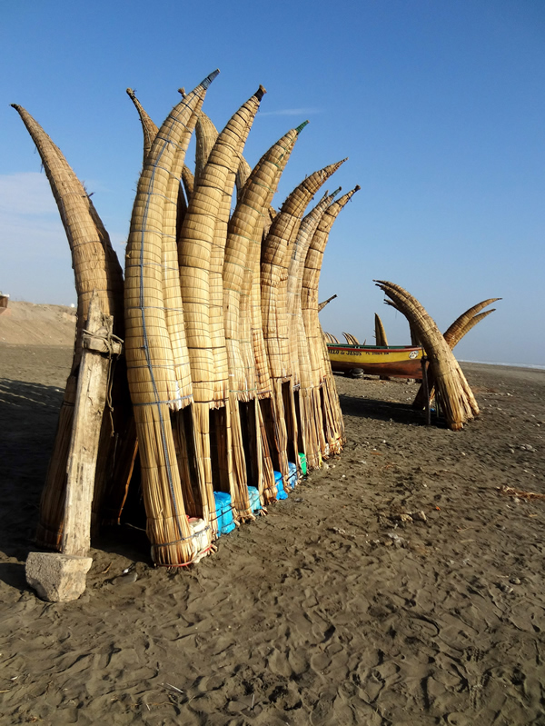
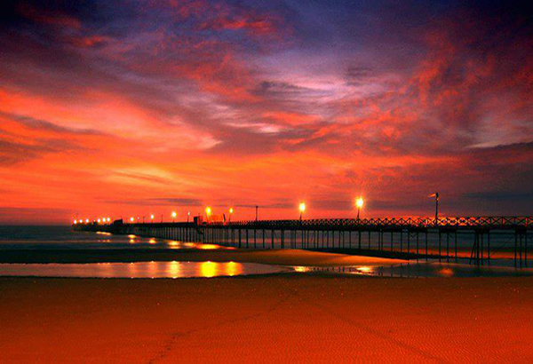
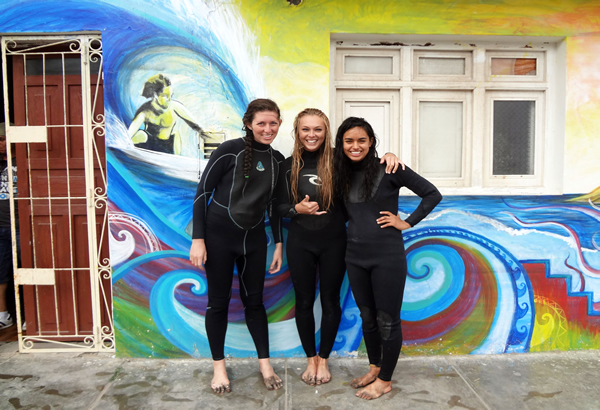

Lambayeque’s Favorite Beach
Pimentel is one of the most well-known and popular beaches in the Lambayeque region. There is a long dock that extends into the ocean on which you can take a stroll out to the very end. This dock has a board pathway down the center, making the walk a little safer than most docks in the area. The shores of this beach are lined by small restaurants, shops, and apartments, and on the beach there are old, colorful boats that the local fishermen occasionally take out. You can check out the traditional reed boats of Lambayeque, called caballitos de totora, and see the fishermen at work in them. Come enjoy a quiet, relaxing beach with beautiful sunsets and friendly people, while still holding true to the exciting Peruvian culture!


Activities:
- Walk the Pier: For a small fee of 2 soles, one can walk the length of the pier and admire the surfers and fishermen lining the waves.
- Surfing: The waves at Pimentel are ideal for beginning to intermediate surfers, and the water are almost never too crowded to get your surf on. Don’t pass up the opportunity to participate in the growing popularity of surfing in Peru! Rent a board or take surfing lessons from the Buenas Olas Surf School. Boogie boards are also available for rental.
More information on the Buenas Olas Surf School:
Phone Number: 979-858-124
Email: olasmocheperu@hotmail.com
Address: Rivera Del Mar 152, Pimentel, Peru
Pricing: Around 20 Soles for wetsuit and board rental.
*Typically surfing lessons are held daily around 4 PM

-
Restaurants Along the Beach: Take a lunch or dinner break at one of the many restaurants lining the shore of Pimentel. Taste the many flavors of fish that were caught by fishermen that very morning!
- Street Vendors: Walk the shore sidewalk and check out the stands of street vendors selling trinkets, bracelets, and snacks.
- Caballitos de Totora: Take the unique opportunity to ride in these traditional kayaks. You will conquer the waves, paddling with a sugar cane shell into the sea. If you don’t have the time to take a full ride, be sure to take a picture with these reed boats, as they are unique to the area. If you are in Pimentel in the morning, be sure to look out for the fishermen embarking on the caballitos de totora for their morning fishing trips.
- Others: Some other fun activities on the beach might be having a picnic, flying kites, sunbathing, or reading a book.
| Location |
| Located in the city of Pimentel, 12 miles (20 km) outside of Chiclayo |
| Hours |
| Pimentel is not a party town, so most restaurants close around 7 or 8, and most people leave the beach by sunset. Get up early in the morning to view fishermen pushing their boats into the ocean or see more traditional Peruvians out fishing in caballitos de totora. We recommend spending time here during the day, but there is security and a lighted area if you would like to take an evening walk. |